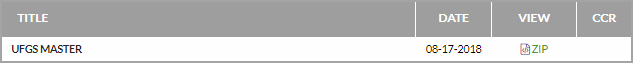

The UFGS Master is released quarterly on the fourth Thursday of the month in February, May, August, and November. SpecsIntact automatically checks to see when a new Unified Facilities Guide Specifications (UFGS) Master is available. When a new version is available, the Current UFGS window will appear, which you can choose to Download or Ignore. If you choose to download, SpecsIntact will download the latest version, then you will be prompted to restore the updated Master.
When prompted that a new UFGS Master is available, follow the prompts to download and restore the Master. However, there are times when you may need to manually download the UFGS Master.
These steps will help you quickly navigate to the Whole Building Design Guide (WBDG) website's UFGS web page.

Users are encouraged to visit the SpecsIntact Website's Support & Help Center for access to all of our User Tools, including Web-Based Help (containing Troubleshooting, Frequently Asked Questions (FAQs), Technical Notes, and Known Problems), eLearning Modules (video tutorials), and printable Guides.
| CONTACT US: | ||
| 256.895.5505 | ||
| SpecsIntact@usace.army.mil | ||
| SpecsIntact.wbdg.org | ||